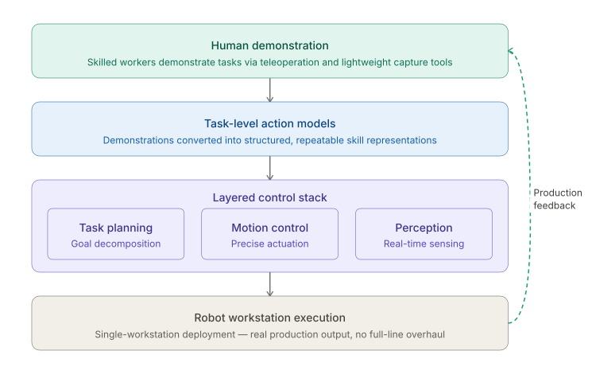
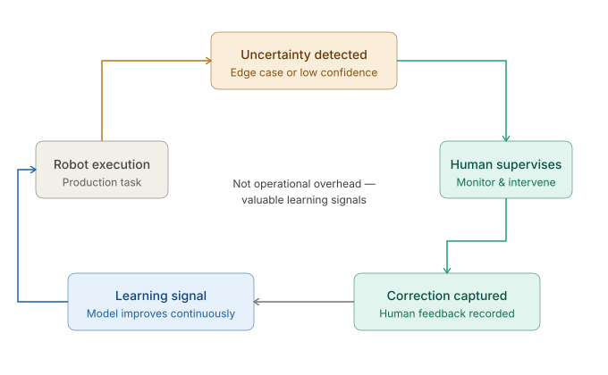

Most robots do not fail because they lack intelligence. They fail because they cannot execute reliably in real production environments. ROBOSPEC builds the action layer that turns human skills into deployable robot work.
Factory work is often repetitive, but rarely rigid. Parts shift, materials vary, and edge cases appear constantly. Traditional automation breaks when real production departs from the script.
Real production lines introduce constant variation that hard-coded systems cannot robustly handle.
Many AI-heavy approaches are still too slow or unstable for the responsiveness required in industrial execution.
End-to-end systems often require more data, tuning, and iteration than factories can practically provide.
What works in a controlled demo often fails under the noise, variation, and interruptions of real factory environments.
ROBOSPEC takes a deployment-first approach to robotics. Instead of relying purely on end-to-end intelligence, we combine learning and engineering in a layered execution stack designed for real production.

We start from single workstations - where real work happens, where traditional automation is hardest to justify, and where practical deployment can create immediate ROI.
Our system learns from human demonstration, converts skills into structured task-level action models, executes through a layered control stack, and improves continuously from real-world production feedback.
We capture how skilled workers perform real tasks through lightweight teleoperation and demonstration tools.
Demonstrations are transformed into structured task-level action models designed for precise, repeatable execution.
The learned skill is deployed directly to a robot workstation without redesigning the full production line.
Human correction and production data continuously feed back into the system, improving reliability, adaptability, and long-term scalability.
ROBOSPEC is built for practical deployment, not all-or-nothing autonomy. When robots encounter uncertainty, humans can supervise, intervene, and correct.
These corrections are not operational overhead - they are valuable learning signals. This allows us to deploy earlier, reduce real-world risk, and improve faster in production.

Every deployment creates more than output - it creates proprietary learning. Demonstration, deployment, correction, and production usage all feed continuous improvement.
Initial worker demonstrations establish the first version of the skill.
The skill runs in production and begins generating task-specific operational data.
Human feedback captures edge cases and refines performance where it matters most.
New production data strengthens the model, improves reliability, and accelerates future rollouts.
ROBOSPEC is designed for semi-structured, high-variation production work - the kind of work still handled manually across factories today.
Start where ROI is visible, deployment is manageable, and value can be proven quickly.
Work with practical robot hardware instead of waiting for ideal future platforms.
Deploy incrementally without redesigning the entire production system.
Scale by reusing learned skills across workstations, lines, and sites.